Dock
A lighter bottom edge
Apps, folders, and the Recycle Bin, right where you want them. Pick windows from live previews.
Learn more →


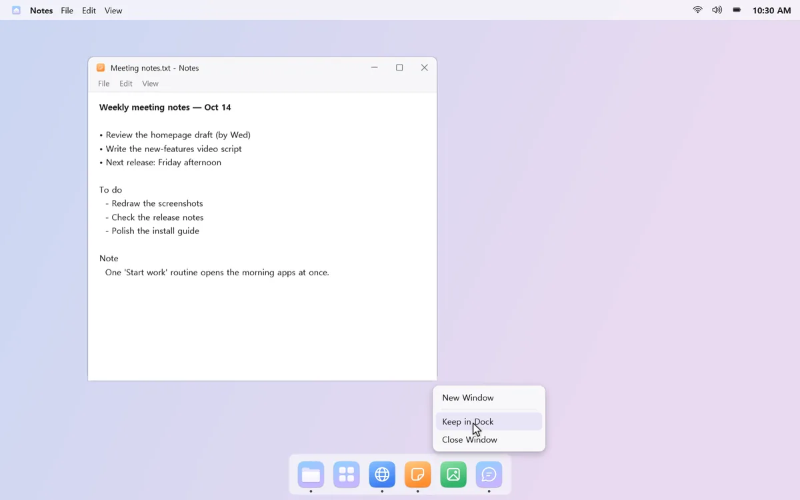
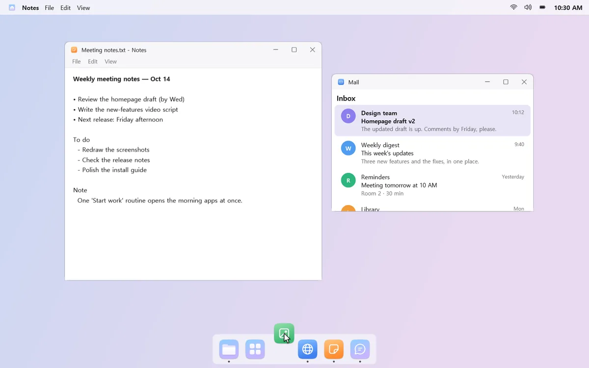
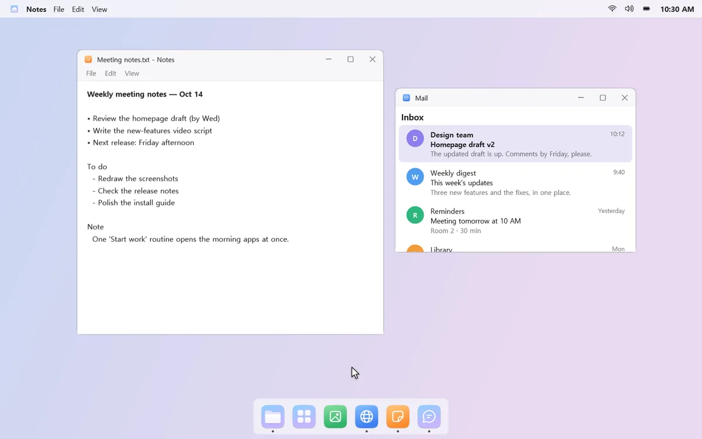
A dock below to launch and switch apps, a menu bar above with app menus, controls, and your calendar. Open the apps you always use together in one click with routines.
Try every feature free for 15 days, then buy once. No subscription, no ads.
Windows 11, or Windows 10 version 2004 or later · x64 PCs

It's full of icons, and the one you need still isn't there.
Volume, brightness, and your calendar each live somewhere else.
Open mail, chat, and docs one by one, then drag each window into place.
mongdock takes care of the small stuff.
Apps, folders, and the Recycle Bin, right where you want them. Pick windows from live previews.
Learn more →


App menus, sound and brightness, your calendar, notification banners, and search all start from one bar.
Learn more →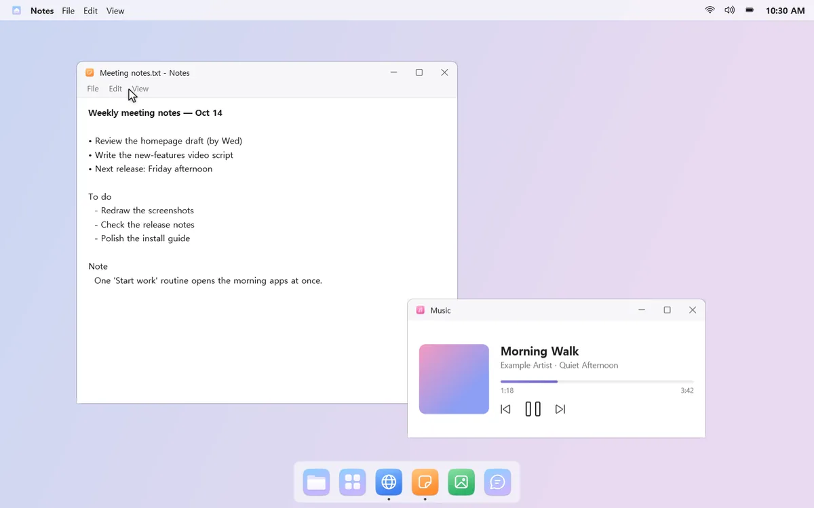
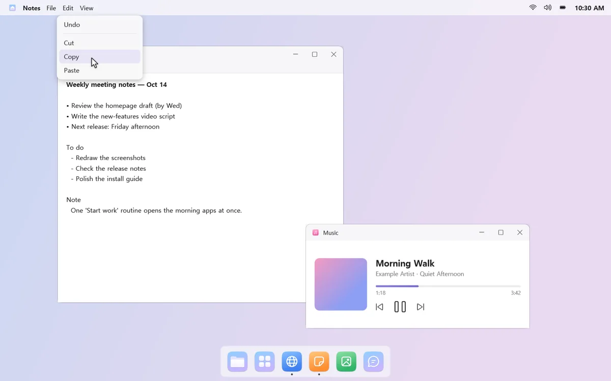
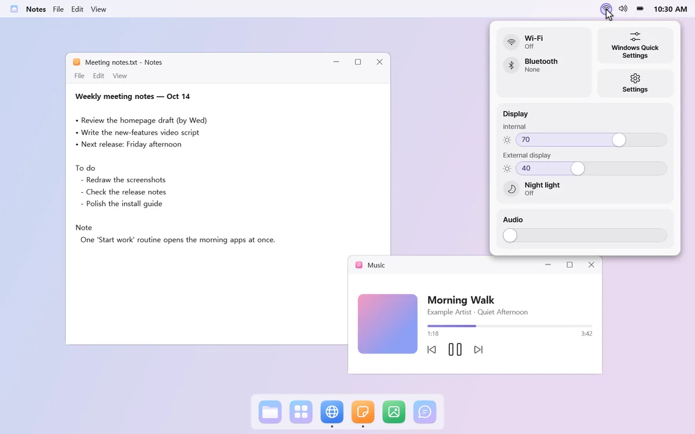
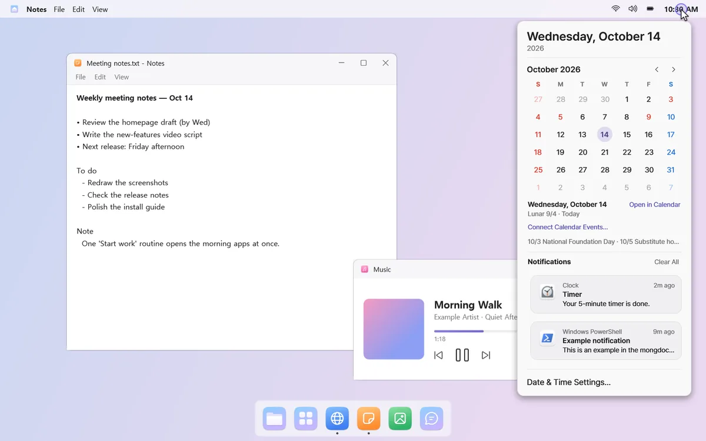
Favorites, folders with only the apps you use, and a cleanup for apps you've stopped opening, in one panel.
Learn more →
Bundle apps, links, and games. They open together on a new desktop, each in its spot, and close together when you're done.
More on Routines →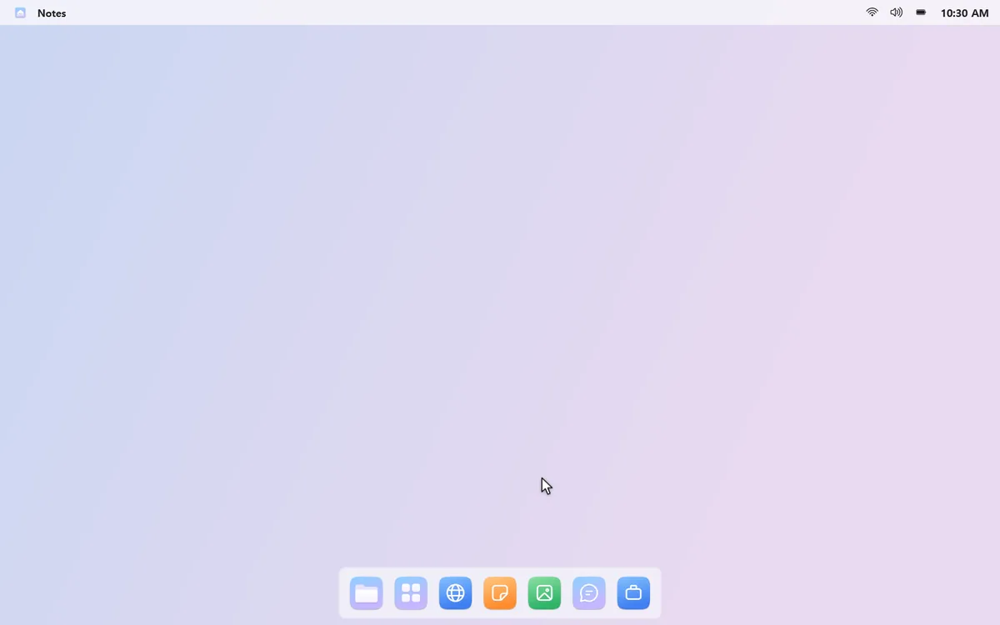
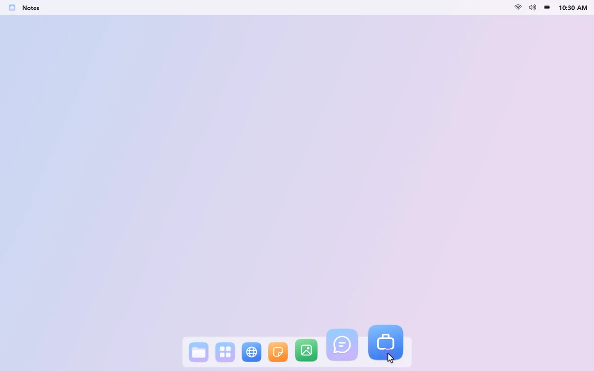
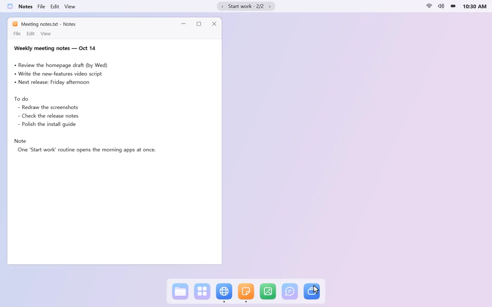
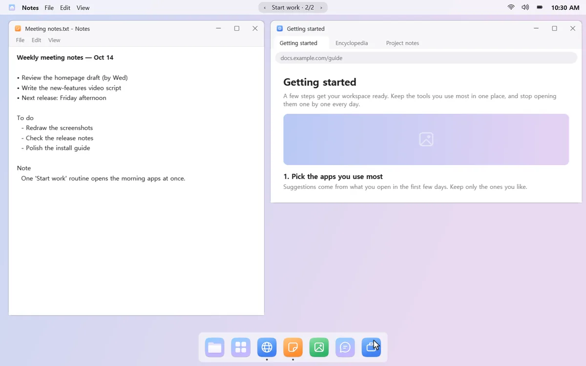
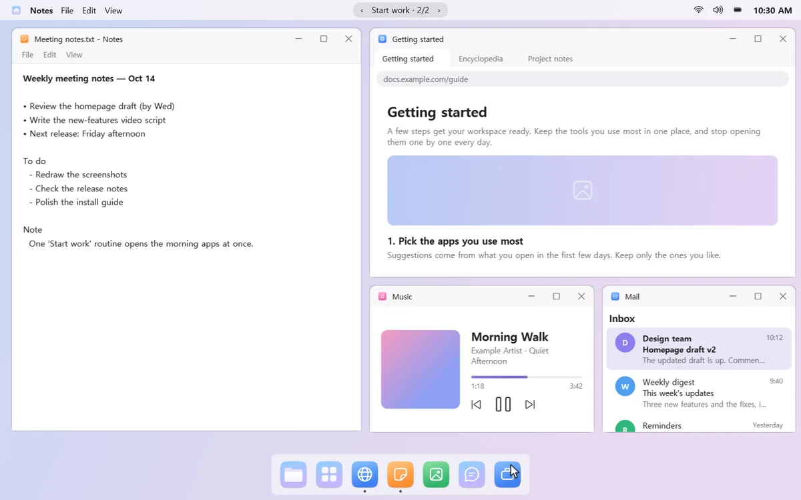
App history, window titles, routines, and notifications are used only on your PC. mongdock never reads your browser's address bar or history. Usage stats are sent only if you agree, and only as counts.
mongdock hides the Windows taskbar only while it runs. Pause or quit, and it's right where you left it.
“Uninstall mongdock…” restores your taskbar, auto-hide, and notification sound before opening the Windows uninstall page.
Free for 15 days